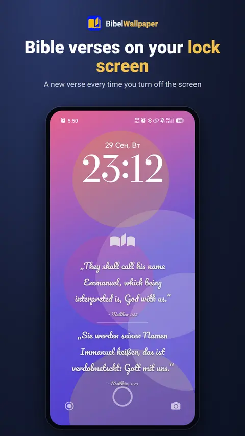
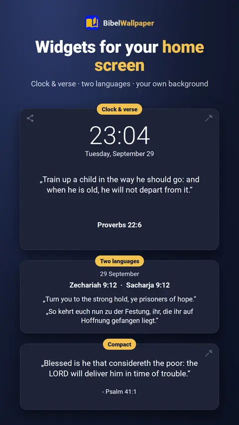
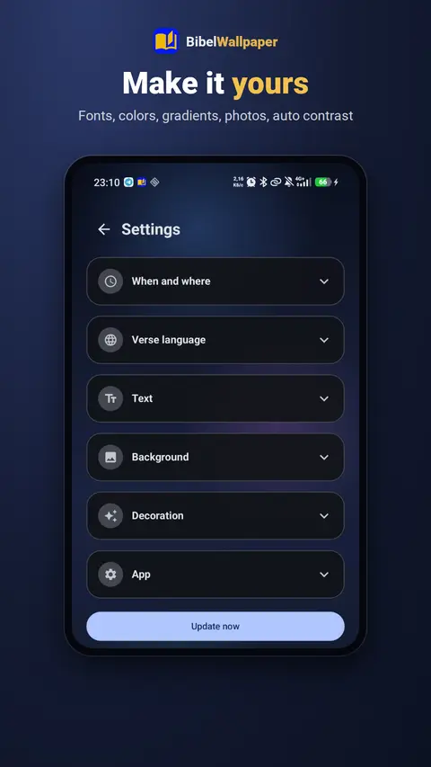
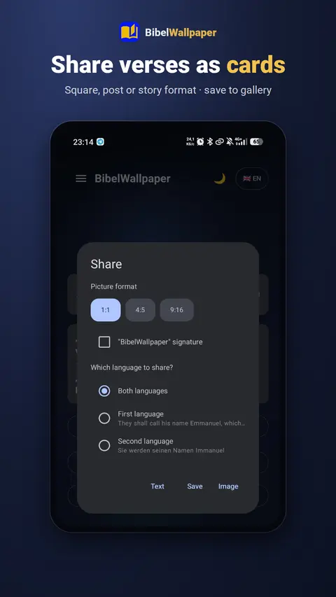
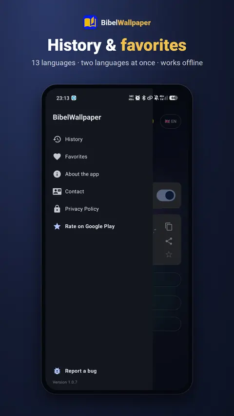
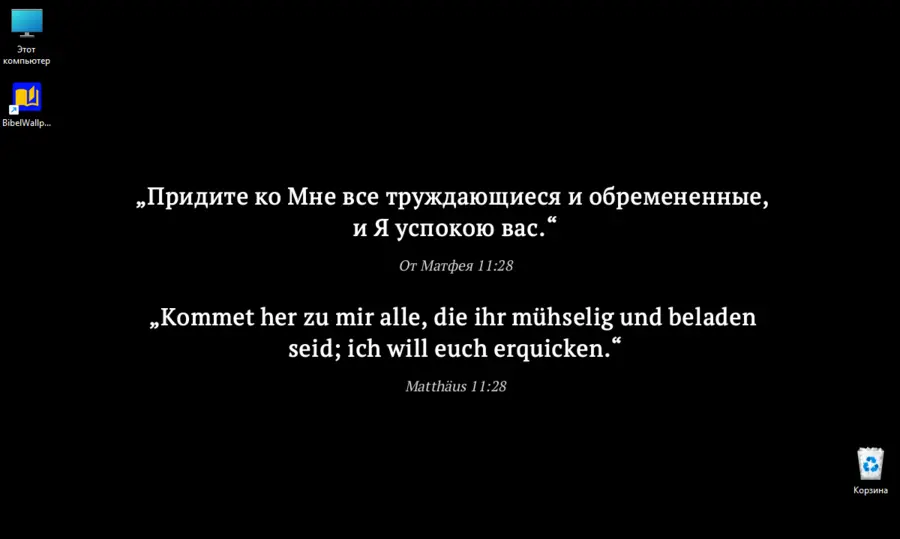
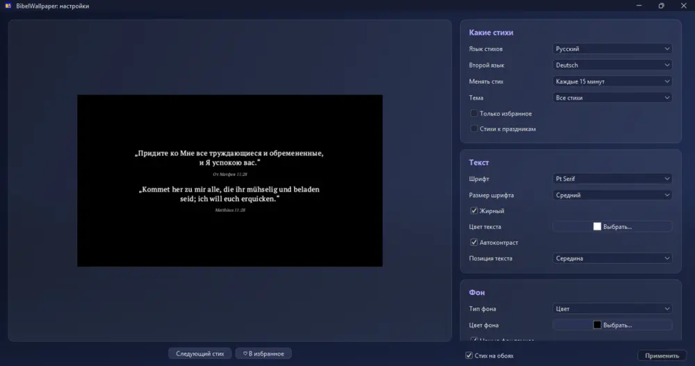
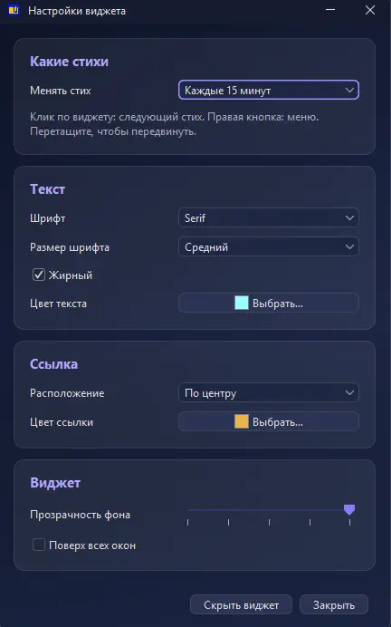

Слово Божье каждый раз, когда вы берёте телефон
BibelWallpaper ставит стих из Библии на обои и сам меняет его. А ещё виджеты, часы Wear OS и программа для компьютера.
«Слово Твоё — светильник ноге моей и свет стезе моей.»Псалом 118:105

Что умеет приложение
Обои со стихом
Новый стих при каждом выключении экрана или по таймеру. Градиенты, свой цвет или ваши фото.
Виджеты
Стих, большой стих и «Часы и стих» на рабочем столе, каждый со своим фоном.
Часы Wear OS
Стих на плитке и циферблате, общее избранное с телефоном.
Стих дня и озвучка
Уведомление со стихом в удобное время. Стих можно послушать.
13 языков
Больше 1000 стихов. Можно показывать стих сразу на двух языках.
Честно и спокойно
Без рекламы, без регистрации, работает без интернета и не собирает данные.
Как это выглядит




Для компьютера скоро
Программа для Windows и Linux: стих на обоях рабочего стола и прозрачный виджет. Меняет стих сама, тихо работает рядом с часами.



Наш Telegram-канал
Новости приложения, обновления и ваши идеи. Будем рады видеть вас!
Открыть в Telegram